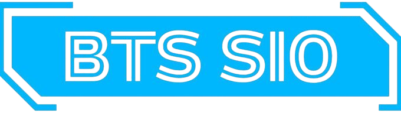
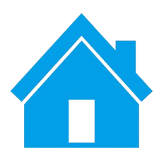

Léon GOMILA
Étudiant en BTS SIO à l'ESM de Joinville-Le-Pont
Je m’appelle Léon GOMILA, j’ai 20 ans et je suis étudiant à l’Ensemble Sainte-Marie de Joinville-Le-Pont en BTS SIO, option SLAM (Solutions Logicielles et Applications Métiers).
Je ne suis pas un grand passionné d’informatique à l’origine. Mon intérêt pour ce domaine provient principalement du fait qu’il s’agit d’un secteur professionnel d’avenir. De plus, étant un grand adepte de jeux vidéo, c’est tout naturellement que l’informatique et plus particulièrement le développement m’a toujours intrigué.
• Initiez-vous au test et à la qualité logiciel
• Ecrivez la documentation technique de votre projet
• Initiez-vous au Deep Learning
• Objectif IA : initez-vous à l'intelligence artificielle
• Gerez votre projet informatique facilement
• Initiez-vous à la gestion de projet agile
• Gérer du code avec Git et GitHub
• Sécurisez vos applications
• Protégez vos système numériques connectés grace aux 12 pratiques de l'ANSSI
• Découvrez les bases de la sécurité numériques
• Analysez et gerez des risques SI

Le BTS Services Informatiques aux Organisations (SIO) est une formation post-bac d’une durée de 2 ans avec, pour finalité au bout, la possibilité d’obtention d’un diplôme de brevet de Technicien Supérieur (BTS). Dans cette filière, la programmation est enseignée aux les étudiants avec le développement web et le développement logiciel mais aussi les réseaux informatiques, se séparant en 2 options distinctes à choisir par les étudiants dès la première année : SLAM ou SISR
| Options | SISR | SLAM |
|---|---|---|
| Notions |
– Gestion des infrastructures informatiques – Réseaux – Systèmes d’exploitation & sécurité – Administration et sécurisation des équipements – Virtualisation – Mise en place de services systèmes |
– Développement d’applications – Conception logicielle – Maintenance applicative – Programmation multi-langages – Interfaces utilisateurs – Gestion des bases de données – Solutions logicielles métiers |
| Débouchés possibles |
– Technicien systèmes et réseaux – Administrateur systèmes & réseaux – Technicien d’infrastructure – Support systèmes et réseaux – Pilote d’exploitation – Gestionnaire de parc informatique |
– Développeur informatique – Analyste programmeur – Chargé d’études informatiques – Programmeur analyste – Responsable d’applications |

83 rue de Paris, Charenton-Le-Pont 94220gomilaleon29@gmail.com
07.66.23.22.12